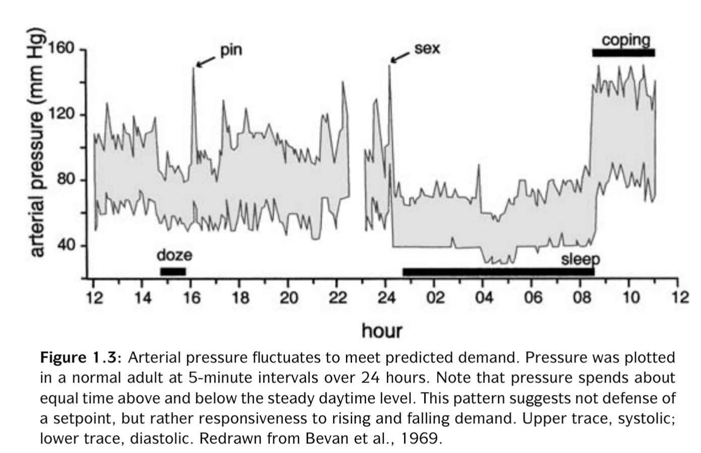
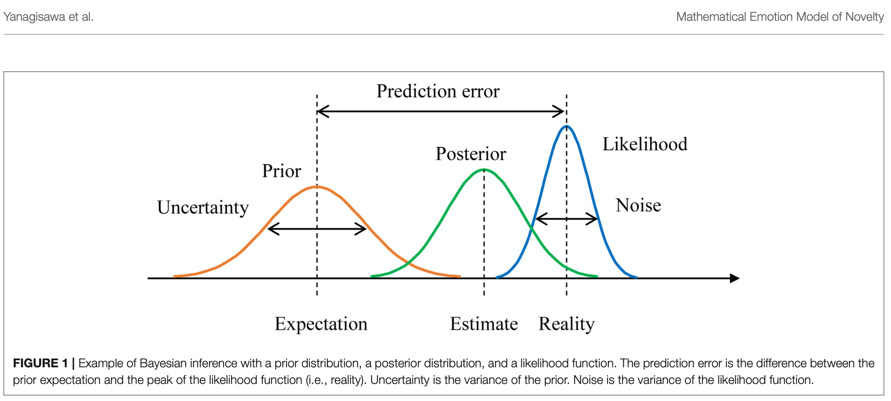
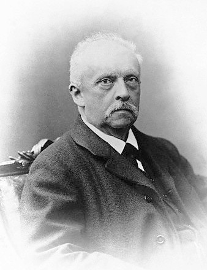

EIM06
Teoria konstruowanych emocji
Krzysztof Basiński
Układanka
- Ewolucjonizm
- Kwestie historyczne
- Allostaza i procesy fizjologiczne
- Inferencja Bayesowska
- Przetwarzanie predykcyjne
- Pojęcia, kategorie i ich tworzenie
Krótka historia kognitywistyki
Behawioryzm
- B.F. Skinner i gołębie
- S -> R
Rewolucja poznawcza
- Noam Chomsky - Review of B.F.Skinner’s Verbal Behavior (1959)
- George Miller - The Magical Number Seven, Plus or Minus Two
- Psychologia, lingwistyka, informatyka, filozofia i neuronauka w jednym (!?!@#!%$!)
- Metafora komputera
- Modularność umysłu, modularność mózgu
- Specjalizacja funkcjonalna mózgu
3E Cognition
- Embodied
- Enactive
- Extended
Embodied cognition (ucieleśnione poznanie)
- Człowiek poznaje świat całym ciałem, nie tylko układem nerwowym
- Praca układu nerwowego jest nierozerwalnie złączona z ciałem
- Mózg jest zamknięty w czarnej skrzynce, jego interakcje ze światem zależne są od ciała
Enactive cognition (enaktywne poznanie)
- Działanie jest nierozerwalnie związane z poznaniem
- Podmiot poznający zawsze działa, porusza się w świecie, aktywnie pozyskując informacje
- Percepcja jest w dużej mierze zależna od ciała i jego ruchu
- Postrzegamy obiekty w kategoriach działań, które możemy na nich wykonać (affordances, Gibson)
- Pojęcia powstają w kontekście działania
Extended cognition (rozszerzone poznanie)
Extended cognition (rozszerzone poznanie)
- Andy Clark i David Chalmers (1998)
- Jakaś część naszego systemu poznawczego jest całkowicie poza naszym ciałem
- Książki, notesy, komputery, smartfony
- Wikipedia?
- Być może poznanie jest “partnerstwem” pomiędzy mózgiem i światem zewnętrznym?
Homeostaza i allostaza
Na podstawie: Peter Sterling (2004), Principles of Allostasis: Optimal Design, Predictive Regulation, Patophysiology and Rational Therapeutics. W: Allostasis, Homeostasis, and the Costs of Physiological Adaptation. Jay Schulkin (Ed.). Cambridge University Press.
Homeostaza
- Claude Bernard, Walter Cannon, przełom XIX i XX w.
- Celem fizjologii jest utrzymywanie stałych warunków wewnątrz organizmu
- Optymalna temperatura, ciśnienie krwi, stężenie glukozy, gospodarka sodowo-potasowa itd.
- Zachwianie homeostazy powoduje uruchomienie sprzężeń zwrotnych
Problem z homeostazą

Ciśnienie krwi
- 110/70 to nie poziom optymalny tylko średni
- Odzwierciedla poziom najczęstszy ale nie najbardziej optymalny
- Większe zapotrzebowanie na tlen (np. z powodu wysiłku) wymaga wyższego ciśnienia
Allostaza
- Celem fizjologii nie jest zachowanie stałych parametrów tylko zwiększenie szansy na sukces reprodukcyjny
- Parametry fizjologiczne fluktuują, ale nie z powodu zachwiania homeostazy
- Fluktuacje służą optymalizacji
- Allostaza: coordinated variation to optimize performance at the least cost (Sterling, 2004)
Zasady allostazy
- Organizmy są wydajne
- Wydajność wymaga wzajemnych “poświęceń” (reciprocal trade-offs)
- Wydajność wymaga przewidywania potrzeb
- Przewidywanie wymaga dostrojenia sensorów do spodziewanych bodźców
- Przewidywanie wymaga dostrojenia efektorów do spodziewanego zapotrzebowania
- Regulacja predyktywna zależy od zachowania, które również podlega adaptacji
Organizmy są wydajne
- Systemy fizjologiczne muszą być wydajne aby dobrze działać w większości prawdopodobnych sytuacji
- Zbyt duża wydajność (odporność na bardzo nieprawdopodobne, ekstremalne warunki) powoduje za duże koszty utrzymania
- Zbyt mała wydajność (brak odporności na prawdopodobne zdarzenia) jest w oczywisty sposób bez sensu
Wydajność wymaga wzajemnych poświęceń
- Reciprocal trade-offs
- Poszczególne systemy/organy mogą dzielić się zasobami
- W czasie spoczynku zapotrzebowanie mięśni szkieletowych na krew to 1,2 l/min
- W czasie 100% wysiłku rośnie do 22l/min
- Nerki chwilowo dostają mniej krwi, żeby zaspokoić zapotrzebowanie mięśni
- To wymaga centralnego sterowania!
Wydajność wymaga przewidywania potrzeb
- Reagowanie na zachwiania równowagi jest niewystarczające i zbyt kosztowne
- Optymalnie jest przewidywać potrzeby i reagować na nie
- Osoba z cukrzycą zrobi sobie zastrzyk z insuliny przed posiłkiem
- Naczelną funkcją mózgu jest przewidywanie przyszłych stanów w celu optymalizacji metabolicznej
Więcej o allostazie i zdrowiu
Statystyka Bayesowska
Zagadka
- Spotykasz studenta na kampusie, zaczynacie rozmawiać
- Okazuje się, że nazywa się Tomek i jest bardzo nieśmiały
- Co robi Tomek?
- Studiuje prawo?
- Robi dr z matematyki?
Zagadka
- Ile jest w ogóle studentów prawa na kampusie?
- Ile jest w ogóle ludzi robiących phd z matmy na kampusie?
Inferencja Bayesowska
\[ P(A \mid B) = \frac{P(B \mid A) \, P(A)}{P(B)} \]
Inferencja Bayesowska

Bayesian Brain Hypothesis
PP
- Predictive processing (przetwarzanie predykcyjne)
- Predictive coding (kodowanie predykcyjne)
- Active inference (aktywne wnioskowanie)
Herman von Helmholtz (1821 - 1894)

Karl Friston

PP - o co chodzi?
Percepcja jest kombinacją:
- Predykcji opartych na wiedzy
- Danych sensorycznych potwierdzających (lub nie) te predykcje
PP - o co chodzi?
Percepcja jest kombinacją:
- procesów zstępujących (top-down)
- procesów wstępujących (bottom-up)
Percepcja to kontrolowana halucynacja
- Wykorzystujemy probabilistyczną wiedzę, żeby tworzyć generatywny model świata
- Model ten wykorzystujemy do konstruowania doświadczeń percepcyjnych
Mózg jako maszyna do tworzenia predykcji
- Mózg (UN) to wielowarstwowe, wieloośrodkowe, hierarchiczne urządzenie, które non-stop zajmuje się przewidywaniem własnych stanów sensorycznych (eksterocepcji, interocepcji, propriocepcji)
- Hierarchiczne, ponieważ wyższe struktury cały czas starają się przewidzieć stany niższych struktur
Błędy predykcji (prediction errors)
- Jeśli stany sensoryczne zgodne są z modelem/przewidywaniami: wszystko jest ok
- Jeśli nie: powstają błędy predykcji, które uaktualniają model tak, by lepiej przewidywał stany
- To jest uczenie się
Precyzja
- Self-estimated sensory uncertainty - precision
- Błędy predykcji mogą wynikać z różnych przyczyn
- W nocy widzimy mniej niż w dzień
- Mózg zdaje sobie sprawę z niepewności związanej z błędami predykcji
- Im większa niepewność/mniejsza precyzja, tym błędy mają mniejszą szansę wpłynąć na model generatywny
Precyzja a uwaga
- W PP ten mechanizm utożsamiany jest z uwagą
- Jeśli kierujemy na coś uwagę, zwiększamy precyzję błędów predykcji
- Zwiększając precyzję, zwiększamy szansę na zmianę modelu świata
PP to nie tylko percepcja
- PP sugeruje, że tworzenie modeli jest naczelną zasadą organizującą systemy biologiczne!
- W tym sensie aplikowane jest do wszystkich obszarów funkcjonowania umysłu
PP to nie tylko teoria!
- PP to zasada, wg. której skonstruowane są układy nerwowe!
- Mózgi ssaków mają architekturę, która pozwala na PP (mają?)
Predykcje w życiu

200km/h!
Proste przykłady
Proste przykłady
PP a emocje?
Andy Clark
Lisa Feldman Barrett
PP a emocje?
- Zacznijmy od pomysłu J-L (współcześnie Prinz, Damasio, etc.)
- Interocepcja jest jednym ze źródeł informacji, które wykorzystujemy do predykcji
- Interocepcja ma wysoką precyzję, więc jest ważna dla modelu generatywnego
- BTW, PP elegancko integruje dane z eksterocepcji
Przykład (LFB)
- Jesteś policjantem, idziesz ciemną ulicą w kiepskiej dzielnicy
- Widzisz człowieka wyjmującego komórkę z kieszeni
- PP tworzy model biorąc pod uwagę: bycie policjantem, ciemność, kiepska dzielnica, ktoś sięga do kieszeni…
- W tej sytuacji może stworzyć się wyraźny percept broni (shooter bias)
Działanie (action)
Klasyczny pogląd na działanie (D.Hume)
Aby działać, potrzebne są:
- Przekonania na temat świata (poznanie)
- Pragnienie, aby zmienić ten świat (emocje)
PP a działanie
Gdy model się nie zgadza z danymi sensorycznymi, można:
- Zmienić model, by pasował do świata
- Zmienić świat, by pasował do modelu
PP a poruszanie się (motor control)
- Gdy chce się poruszyć, wytwarzam model świata, w którym już się poruszyłem
- Model odbiega od rzeczywistości (błędy predykcji!)
- Ruszam się, żeby dopasować model (zmniejszyć błąd)
- (można tak programować roboty!)
Ale po co w ogóle się ruszać?
- PP zakłada hierarchiczność systemu
- Pragnienia “długoterminowe” (motywacje?) są wynikami długoterminowych, wysokopoziomowych predykcji na temat własnego stanu w przyszłości
Przykład (A.Clark)
- Przwiduję, że spotkamy się o 19:00 w kinie, więc…
- Przwiduję, że wsiądę do autobusu o 18:30, więc…
- Przwiduję, że poruszę moimi kończynami, żeby dojść na przystanek, itd.
Prymat emocji? Poznania?
- W PP emocje są skutkiem predykcji na temat przyszłego stanu, wykształconymi przez ekstero/interocepcję
- Emocje = tendencja do działania (action tendency)
- W tym sensie wszystko jest powiązane (co rozwiązuje wiele problemów!) a rozgraniczenie na emocje i poznanie traci sens
Od PP do free energy principle
Problemy z PP
- Teoria wszystkiego?
- Falsyfikowalność?
- Czy PP to wszystko, czy jest coś jeszcze?
- Czy PP tłumaczy celowość, moralność, inne ludzkie przywary?
- Czy free energy principle się zgadza?
Jeśli kogoś to zainteresowało…
Anil Seth: Your brain hallucinates your conscious reality
Andy Clark: Happily Entangled: Emotions Cognition and the Predictive Mind
Książki o PP
Jakob Hohwy, The Predictive Mind (2014), Oxford University Press
Książki o PP